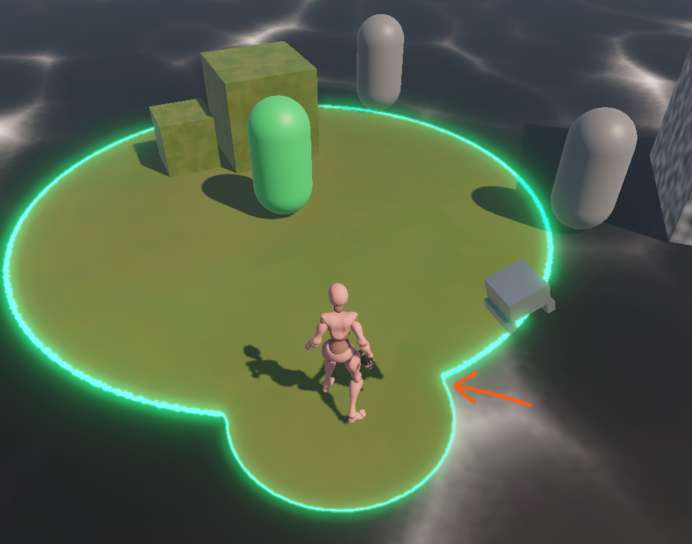
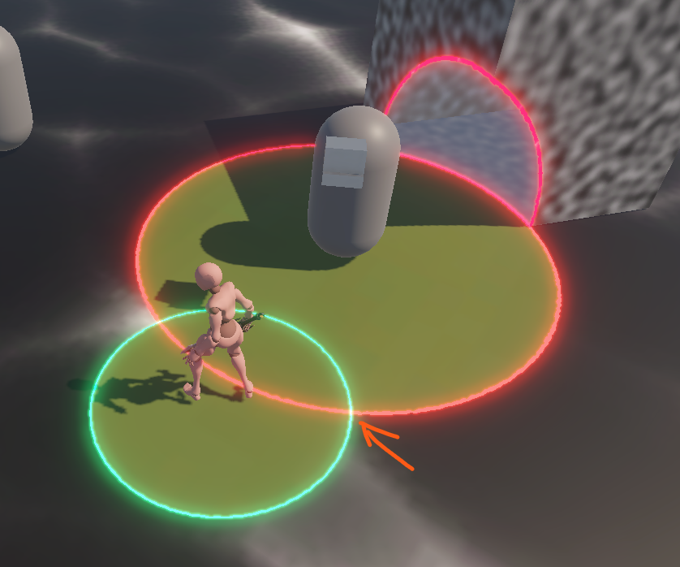

Amidst Blooming Melodies
Demo Video
Project Overview
An action-adventure game with a unique diegetic health mechanic (the Volume) displayed beneath the player character as a circle that purifies and interacts with the game environment. You play as Flos against the Giant Voiceless — a bunny-shaped, single-eyed "Corrupted Collective" boss — focusing on a puzzle-box level design and three-phase boss fight Made as my Master's Project where I ran a between-subjects study with 2 builds to investigate how audiovisual and narrative design enhances combat experience while the underlying mechanics remains identical across both conditions.
Tools
- Unity
- FMOD Studio
- Blender
- Krita
- Audacity
- FL Studio
- Ableton Live 12
Roles
- Gameplay Design
- Systems Design
- Level Design
- Programming
- Music Composition
- Sound Design
- Technical Art
- UI/UX
Design Breakdown
Core Mechanic

The game features a unique diegetic health mechanic: the Volume, displayed beneath the player character as a circle. The neat part is that this circle also interacts with the game environment (as a purify source)!
Purify, Not kill

The enemies are corrupted, so the player purifies them instead of
killing them.
Attacking enemies causes the same circle on
them to grow. The circle turns green and the creature visually
changes when purification completes.
Several testers described this as a novel and heartwarming
experience.
Volume as a Puzzling Tool
The Volume also acts as a puzzle tool. It interacts with the environment and reveals hidden objects, so the purification theme extends beyond combat. Several puzzle ideas are tested within the proof of concept prototype.
3-Phase Boss Design

Phase 1: introduces the boss's actions at low difficulty: an
easy-to-dodge exploding projectile toss, punches and stomps.
Phase
2: adds mobility and positioning pressure: two consecutive rushes,
a jumpable shockwave, and a three-projectile toss.
Phase 3:
escalates with three consecutive rushes and an ultimate: a charged
explosion that hits hard up close and scatters exploding
projectiles.
Modular In-Editor Game Object Based State Machine

The Giant Voiceless’s abilities are authored as child game objects, and the state machine is generated from them at spawn. An ability only defines what it does and its conditions, and the system handles entering and exiting its state. Adding or removing an ability object changes the moveset with no code change, and nothing breaks. Once the system existed, the full moveset took under five days, each ability functional in under 30 minutes.
Narrative Design
Narrative Background

You play as Flos, an interstellar traveller who crash-lands on Floralis, a planet she eventually discovers is her home planet. Floralis is plagued by a phenomenon known as the Voiceless. Use the power of your music to purify corrupted enemies, solve environmental puzzles, and restore the voices of a lost world.
Character Design & Concept Art


Art by Zhong Hao Lai